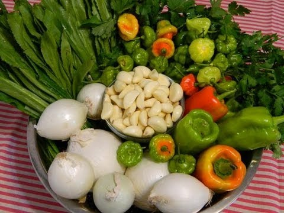
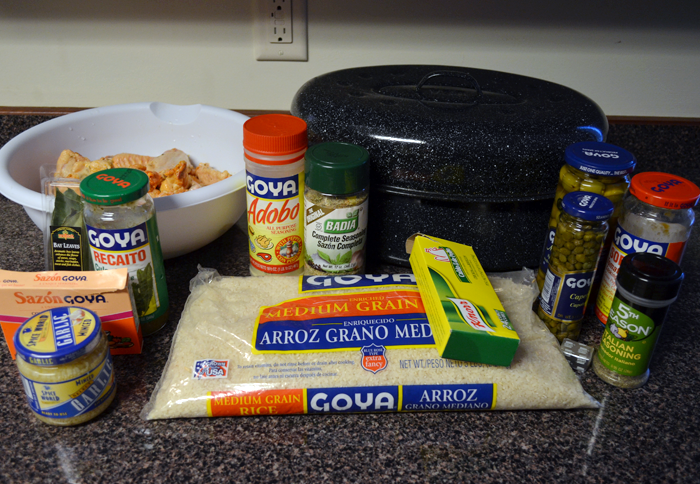

At least once a month my mother would make "Arroz con Pollo". It was one of my favorite dishes. My mom would go to "el vivero" a place where they sold live poultry. Get a hen and then head over to "el mercado" the market place. Where she would buy the rice and all the herbs use to make "el sorifto". You cannot make spanish food without sorifto we use in everything. It amazing that someone has not make a perfume out of it. You just get this happy feeling when you start making it. The smell takes over the house and everyone know something wonderful is being made.

